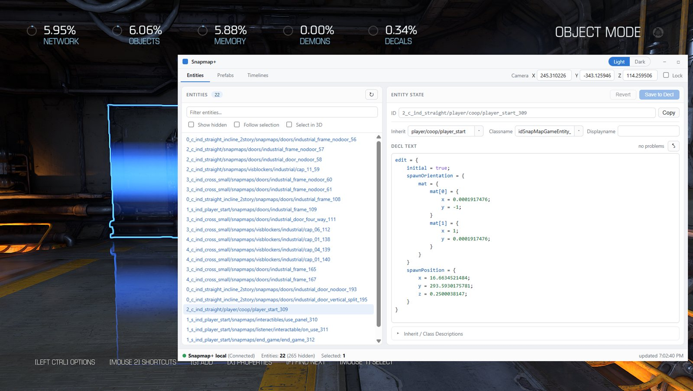
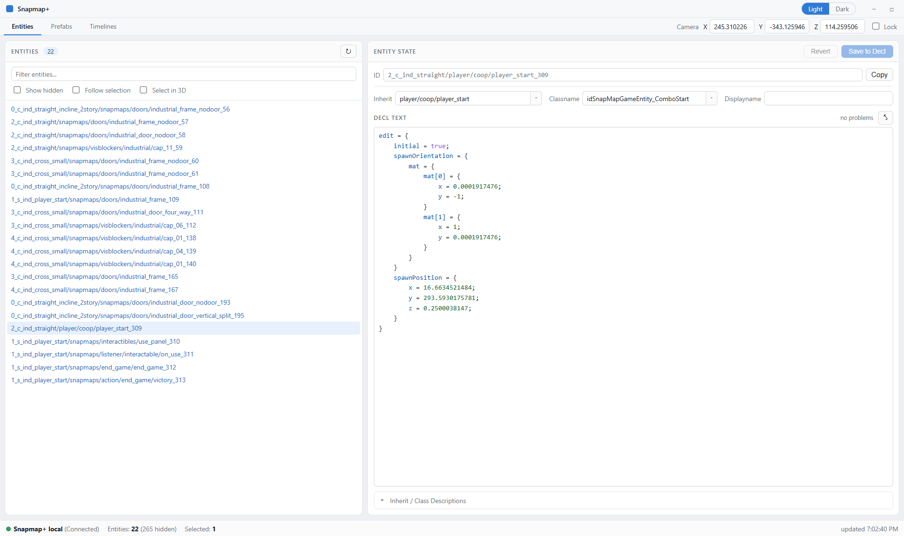
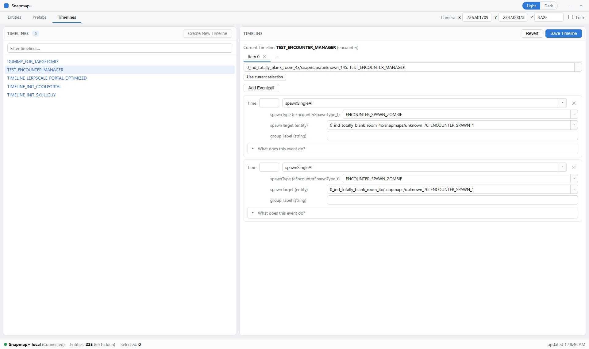
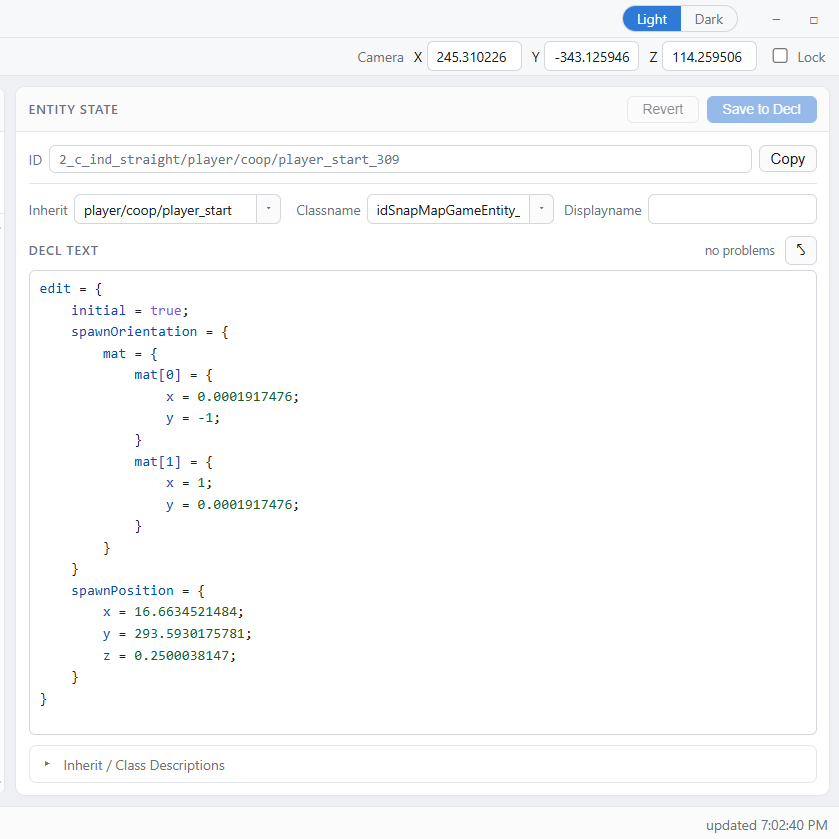
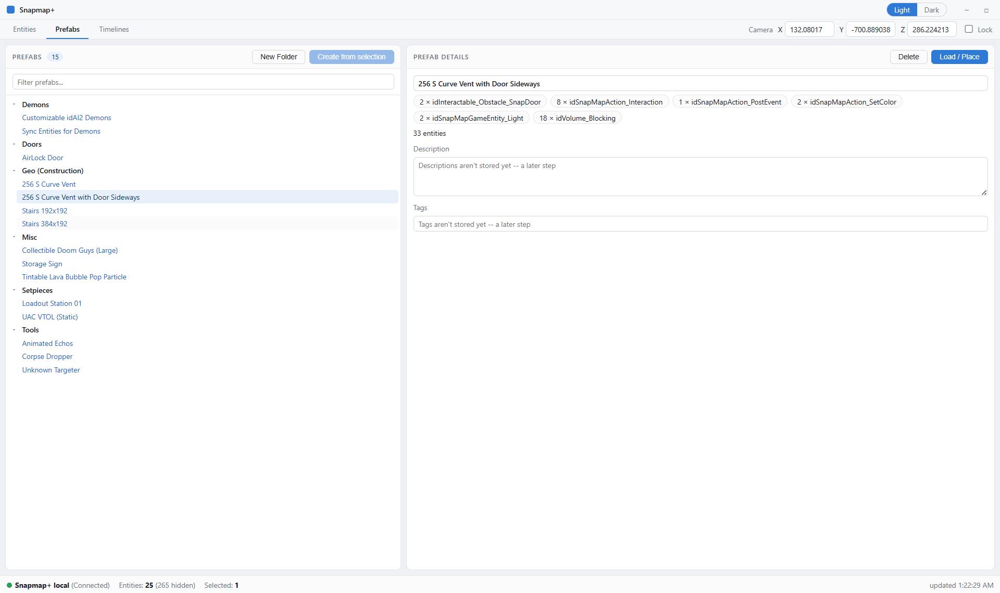
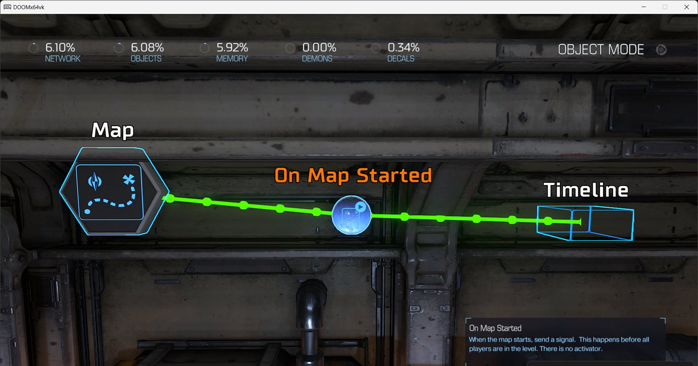

The SnapMap editor, unchained.
Edit every property the engine knows. Bypass the stock editor's size, name, and palette limits. Place entities SnapMap was never built to expose. Your maps stay fully playable for everyone — console players included, nothing to install on their end.

What it opens up
Snapmap+ reads and writes the map data itself instead of going through the stock editor's menus — so the editor's guardrails simply don't apply.
See every property. Edit every property.
Entities carry far more fields than SnapMap's Properties menu shows. Snapmap+ puts the whole definition in front of you — and name-length caps, max sizes, fixed texture and model pickers are UI limits, not engine rules. Scale past the max. Apply any material.
- Syntax-colored editor with a live problem checker
- Focus mode for long definitions
- Reclass an entity into anything compatible

Place what the palette never showed you.
The engine has entity types SnapMap's palette never exposed. Snapmap+ reveals them in a
*Custom tab inside DOOM's own Create menu — you place them exactly the
way you place everything else, and the game does the rest.
- Hidden and campaign-only entities, drag-placeable
- Ships in DOOM's native Create menu, not a bolt-on
- Spawn any entity definition by name from the console

*Custom tab, right inside DOOM's own Create menu.Direct your map like a stage play.
Timelines are the engine's most powerful scripting entity — multiple actions on multiple entities with staggered timing — and the stock editor barely lets you touch them. Snapmap+ gives them a dedicated visual editor with typed fields.
- Sequence events across any entities, on the clock
- Typed argument fields — no guessing at formats
- Prefabs: save a rig once, paste it into any map, share it as a file

Up and running in three steps
One small file. It installs, updates, and uninstalls itself — and restores vanilla exactly.
Download
Grab snapmap-plus.exe with the button above. It keeps itself and Snapmap+ up to date from then on.
Double-click it
The installer finds your DOOM 2016 install automatically, asks you to confirm, and places two files. Still have the original SnapHak in there? It cleans that out for you — your maps and prefabs carry over.
Open SnapMap
Launch DOOM, open a map in the SnapMap editor — the Snapmap+ window appears alongside the game. Alt+Tab over and start editing.
Heads-up: Snapmap+ currently targets the DOOM build from before the April 2024 patch — a one-time depot download puts you on it, and online map publishing still works. The install section of the guide walks through it.
In action
Click any screenshot to focus it.




sh_target_any — the hidden half of the palette, revealed.For the SnapMappers
SnapMap gave a generation of DOOM fans their first level editor. This is our thank-you note.
Snapmap+ is free, MIT-licensed, and built in the open as a recreation of the original SnapHak tool. It collects nothing automatically — and when something breaks, the ? button files a report straight from the tool, so fixes land fast.
Everything you build stays standard SnapMap: publish your maps online and anyone can play them — PC, PlayStation, or Xbox — with nothing to install.